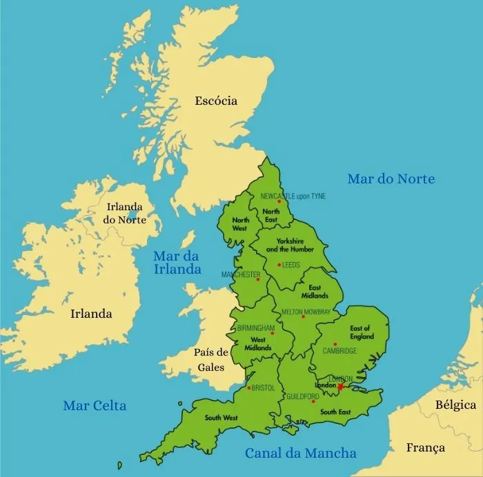
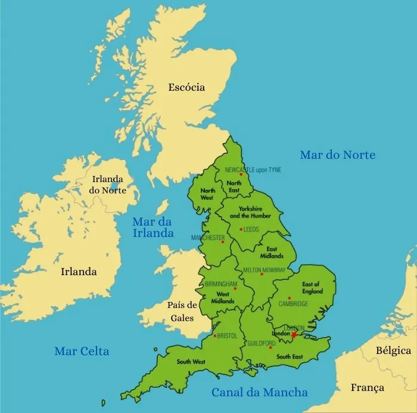
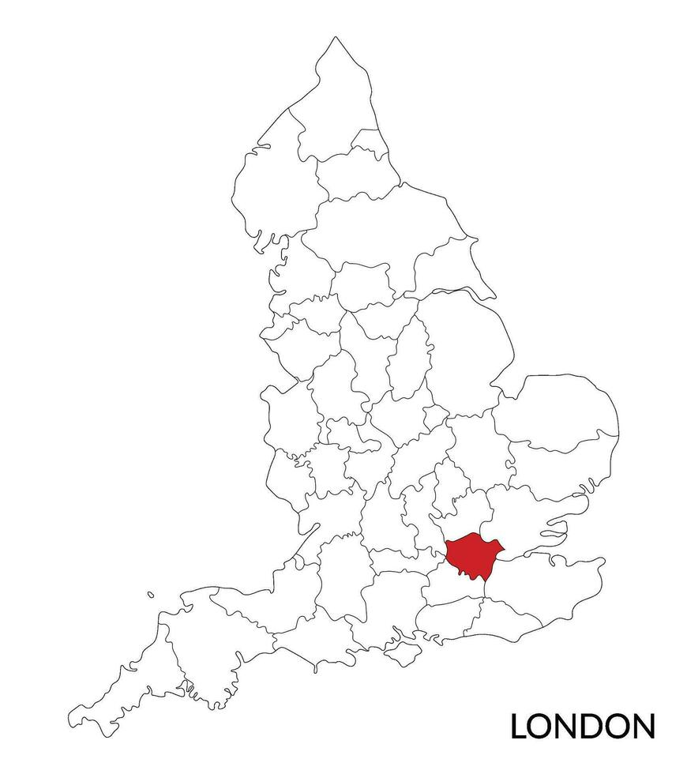
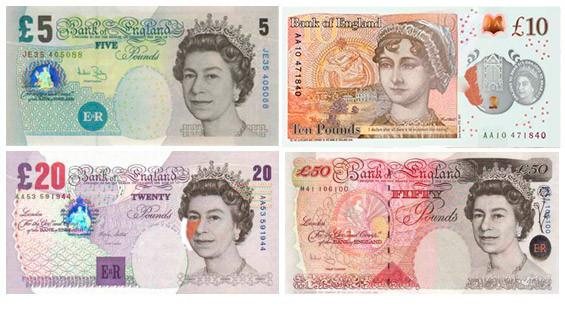
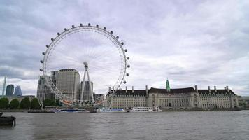
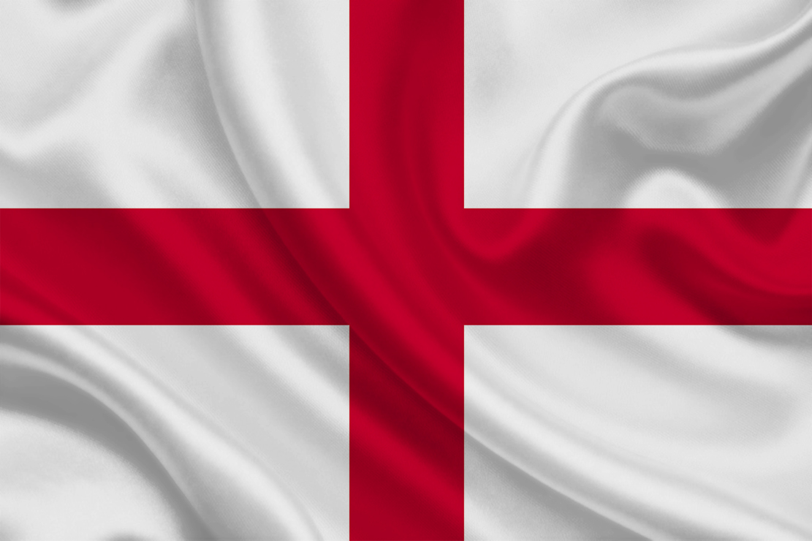
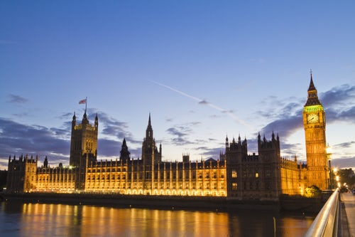
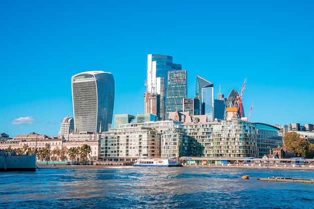

Localização Geográfica
A Inglaterra está situada na ilha da Grã-Bretanha, ao lado do País de Gales e da Escócia, e faz parte do Reino Unido. Ela é banhada pelo Mar do Norte a leste e pelo Canal da Mancha ao sul, que a separa da França.
Por Victor Hernandez
A Inglaterra está situada na ilha da Grã-Bretanha, ao lado do País de Gales e da Escócia, e faz parte do Reino Unido. Ela é banhada pelo Mar do Norte a leste e pelo Canal da Mancha ao sul, que a separa da França.
Londres é a capital da Inglaterra e uma das cidades mais conhecidas do mundo. É um importante centro financeiro, cultural e histórico, com pontos turísticos como o Big Ben, a London Eye e o Palácio de Buckingham.
A Inglaterra abriga cerca de 56 milhões de pessoas. É uma nação multicultural, com comunidades vindas de todo o mundo, o que se reflete na cultura, culinária e nos costumes do dia a dia.
O inglês é o idioma oficial e é falado com diferentes sotaques regionais. A língua inglesa se expandiu a partir da Inglaterra e hoje é uma das mais utilizadas no mundo.
A moeda oficial é a Libra Esterlina (£), conhecida por sua estabilidade e valor elevado.
A Igreja Anglicana é a principal instituição religiosa da Inglaterra, mas há também muitas outras religiões praticadas, como islamismo, hinduísmo, budismo e o ateísmo, refletindo a diversidade da sociedade.
O clima é temperado oceânico, com invernos frios, verões suaves e chuvas frequentes. O guarda-chuva é quase sempre necessário!
Os símbolos incluem a bandeira de São Jorge (cruz vermelha sobre fundo branco), a rosa vermelha e o leão heráldico.
A Inglaterra faz parte de uma monarquia constitucional com um sistema parlamentar. O Rei atua como chefe de Estado simbólico, enquanto o Primeiro-Ministro é o chefe de governo.
A economia inglesa é uma das mais fortes do mundo. Londres é referência global em finanças, e o país é também destaque nos setores farmacêutico, tecnológico e criativo.
